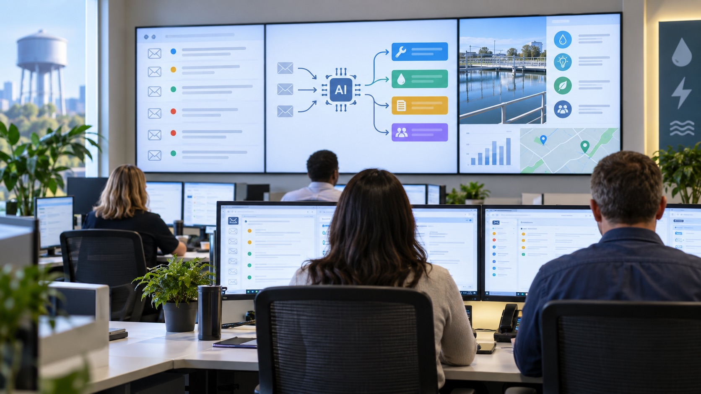

Understand what agents can do, why complexity matters, when multiple agents are justified, and how organisations translate responsible AI principles into controls and accountability.
Orientation
How the three modules connect
Required before every seminar
Complete the weekly companion and bring the unlocked activity to class
At the end of each weekly topic, you must complete a Word activity and bring it to class. Its download stays locked until you complete the week and answer every question in the final Review understanding section correctly.
Complete the weekly companion and all required readings, videos and other media.
Answer every question in the final Review understanding section correctly. You can retry incorrect answers.
Download the unlocked Word activity, complete it and bring it to the seminar.
The self-checks are unmarked. Completing and bringing the final activity is required seminar preparation.
Use this test throughout the companion: if an AI system can access information, use tools or affect a person, specify its permissions, review points, stopping conditions and evidence of correct operation.
WEEK 7
What are simple AI agents?
This week begins with a familiar workplace task and builds towards an understanding of how a simple AI agent can help complete it.
Required Week 7 preparation
Complete the companion and bring your Simple Agent Candidate Card
Complete Week 7 and its required media.
Answer all four final review questions correctly to unlock the download.
Complete the Word card and bring it to the seminar.
The self-checks are unmarked. The activity download remains locked until all four final answers are correct.
How can AI move from answering a question to supporting a task?
A simple agent helps complete a defined piece of work step by step, while people retain responsibility for important decisions and actions.
What will you learn this week?
Purpose: Understand what makes an AI system an agent and how a bounded simple agent differs from ordinary chat and fixed automation.
Core concepts: Outcomes or goals, models, tools, instructions, knowledge, context, state, memory, actions, guardrails and human oversight, with a brief introduction to reusable skills.
By the end: You should be able to recognise a simple-agent use case and explain the capabilities, boundaries and human responsibilities it requires.
Required pathway: about 60 minutes, including required excerpts, focused reading and knowledge checks. Expandable “More detail” panels provide supporting explanation when needed. Sections labelled “Optional extension” or “Explore further” are excluded from this total.
Running scenario
A recurring internet-service enquiry: a customer reports that their home internet has disconnected repeatedly for three days. Restarting the router did not resolve the problem, and the disruption is affecting their work. A frontline employee needs to gather the relevant details, consult approved troubleshooting and escalation guidance, and prepare an appropriate next step. We will follow this same enquiry throughout Week 7.
How will the agent move from idea to implementation?
Read Week 7 as a build recipe. Each phase uses the decisions made in the previous phase and produces something needed for the next.
What is an agent? About 13 min · includes 7 min video
Scenario step 1
The employee receives the enquiry. At this point, they know the reported problem and that restarting the router did not help. They still need details such as when the disruptions occur, what the router displays and which troubleshooting steps have already been attempted.
?
What happens with ordinary AI chat?
The employee might ask, “What should I do about recurring internet dropouts?” The chat produces an answer, while the employee decides which details to gather, which guidance to consult and what to ask next.
→
What changes with an AI agent?
The employee gives the system the outcome: prepare an appropriate next step. The agent can identify missing details, request them, consult permitted guidance and prepare a structured recommendation within its limits.
Chat and agent describe operating patterns. Chat describes how a person interacts with the system. Agentic behaviour describes how the system pursues a goal, manages steps and uses permitted capabilities. The same platform may support either pattern.
Plain-language definition: an AI agent is AI configured to work towards a goal through a series of permitted steps.
A workflow is the connected sequence of steps used to complete the work. An agent may decide which permitted step is appropriate next. Conventional automation follows a sequence fixed in advance.
Dimension
AI chat or assistant
Conventional automation
AI agent
Who determines the steps
The user directs each exchange
The designer fixes the sequence
The system may select or coordinate permitted steps
Typical output
Information or content
A predetermined action
Progress towards a defined outcome
When it stops
After responding
After the programmed sequence
At the goal, a limit, an escalation or another stop condition
Many organisational systems are hybrids. Fixed rules can control predictable or consequential steps while an AI agent handles interpretation, information gathering or preparation.
A more formal definition
An AI agent is a system in which an AI model manages part of a workflow, chooses among permitted steps or tools, and works towards a defined goal within instructions and guardrails.
Optional depth: personal and organisational agents
Where might you encounter agents in everyday life?
Consumer agents can pursue goals across websites and apps. Their authority can range from observing information to completing an approved transaction.
MonitorWatch prices, appointment availability or market information and report a relevant change.
InvestigateSearch for tickets, products or services and compare available alternatives.
RecommendApply the user’s preferences and prepare a proposed option for review.
ActBook an appointment, reserve a ticket or place an order after the required approval.
Monitoring alone does not establish that a system is an agent. A fixed alert such as “notify me when the price falls below $100” may be conventional automation. Agentic behaviour becomes more evident when the system interprets changing information, adapts its steps or uses permitted tools to pursue the user’s goal.
Who is the agent working for?
The underlying capabilities may be similar, while the operating context changes the information, authority, controls and accountability required.
Dimension
Personal agent
Organisational agent
Primary goal
Supports an individual’s goal
Supports an approved organisational outcome
Typical user
One person
Employees, teams or customers
Information
Personal preferences, accounts and history
Organisational knowledge, records and policies
Possible actions
Monitor, compare, book or purchase
Prepare recommendations, update workflows or support service delivery
Authority
Granted by the individual
Defined through roles, permissions and organisational controls
Accountability
The user remains responsible for consequential choices
Responsibility may involve employees, managers, system owners and the organisation
Potential impact
Usually concentrated on the individual
May affect many customers, employees or stakeholders
Back to our scenario
The recurring service-enquiry agent is an organisational agent. It supports an approved service process, uses organisational guidance and prepares an output for an authorised employee. Its permissions and boundaries must therefore be defined by the organisation, and responsibility cannot be assigned to the person who configured it alone.
Course terminology: there is no universally agreed boundary between a simple and complex agent. In this course, a simple agent supports one bounded outcome using limited knowledge or tools, a manageable process and explicit human-controlled boundaries.
Pause and check
Which system provides the clearest evidence of agentic behaviour?
Design the agent
What must be designed into a simple agent? About 7 min
A simple agent brings together a small number of building blocks. Each one answers a different design question.
Scenario step 2
The enquiry becomes a bounded agent task. The agent supports one outcome: help the employee prepare the next appropriate response to this recurring service disruption. Each building block below contributes to that task.
Anatomy of a bounded simple agent
User outcome or goal
→
Simple agent
InstructionsKnowledgeAI modelContext and state
→
Response or permitted tool
Human review
How are context, state and memory different?
ContextInformation available during the current interaction.
StateInformation recording progress through the current task.
MemoryInformation retained for use in later interactions.
A simple agent may use context and temporary state without retaining long-term memory.
Explore examples of tools an agent might use
A tool is a capability the agent is permitted to call while completing its task. The platform hosts the agent; tools extend what the agent can retrieve, process or change. Producing ordinary text may be a direct model output and does not always require a separate tool.
⌕
Information tools
Search approved documents, websites, databases or records.
∑
Processing tools
Calculate, analyse data, convert formats or apply a defined rule.
⚙
Action tools
Send a message, update a record, create a case or trigger a workflow when explicitly authorised.
Where do skills fit? Some platforms use skill to describe a reusable capability packaged for a particular kind of task. A skill may combine instructions, approved knowledge, tools and a repeatable procedure. For this scenario, a “recurring service-enquiry skill” could gather required details, consult the supplied guidance and prepare a structured next step. Platform terminology varies, so a skill should not be treated as a universal additional component of every agent.
How can an agent use a computer?
Computer Use allows an agent to interact with a graphical interface in ways similar to a person. It may inspect what is displayed, click buttons, type into fields, move between pages or applications, and inspect the result before choosing its next permitted step.
A Computer Use loop
Observe the interface
Interpret the current state
Choose a permitted step
Click, type or navigate
Inspect the result
↺ Continue, stop or ask a person to intervene.
How can an agent interact with information and systems?
Agents can use different interaction methods. The appropriate choice depends on the task, available system access, reliability required and consequences of an error.
⌕
Web search
Interacts with
Publicly available web information
Useful for
Finding current information and comparing public sources
Constraint
Usually retrieves information without operating an account or system
{ }
API
Interacts with
A defined machine-to-machine interface
Useful for
Reliable, structured retrieval or authorised actions
Constraint
Requires a suitable API, authentication and explicit implementation
↔
Connector
Interacts with
An approved application or organisational service
Useful for
Accessing permitted data or actions through a configured integration
Constraint
Capabilities depend on permissions and what the connector exposes
⌨
Computer Use
Interacts with
The visible interface of a website or application
Useful for
Tasks requiring clicking, typing, navigation or visual inspection
Constraint
Interfaces can change and actions may be less predictable than structured integrations
Choose tools by reliability and control: use a structured integration when one is available. Use Computer Use when the task genuinely depends on an interface or no suitable integration exists.
⌨
When can it add value?
Computer Use can help when a task depends on a website or application that does not provide a suitable structured integration. A personal agent might compare public listings, prepare an appointment form or navigate to the final stage of a booking.
!
What changes when it can act?
Interfaces can change, pages may contain misleading instructions, and an incorrect click may affect real data. The task therefore needs narrow permissions, visible stopping conditions and human confirmation before consequential actions.
Computer Use is a capability, not a definition of an agent. An agent may use search, APIs, organisational connectors, Computer Use or a combination of tools. The important questions remain what goal it is pursuing, what it may access, what it may do and when a person must intervene.
Optional reading, about 3 min: read the introductory explanation of Computer Use and the safety guidance on confirmation, permissions and consequential actions. Open the focused documentation ↗
Keep the first design bounded: one user, one outcome, a limited set of information or tools, and a clear point where a person reviews, decides or acts.
Pause and check
An agent can search an approved knowledge base. Which statement best describes that capability?
What makes a simple agent suitable? About 9 min · includes 5 min reading
Scenario step 3
Why is this a plausible simple-agent use case? It has one user, one bounded outcome, a limited set of approved guidance and a clear handoff to the employee. A broader service that diagnosed every technical fault, accessed live accounts and independently changed services would require greater complexity and authority.
✓
Which tasks are good candidates?
Retrieving and organising approved information
Gathering missing information
Preparing a structured briefing or handover
Drafting a bounded recommendation for review
Completing a repeatable knowledge-work process
↗
What signals greater complexity?
Several interdependent outcomes
Different specialist knowledge at different stages
Multiple tools with consequential effects
Variable pathways and handovers
Long-lived context across tasks
Significant delegated authority
Do not add components without a reason: if one bounded agent can complete the task reliably with approved information and tools, a more complex architecture has no demonstrated benefit.
↗
FOCUSED READING · APPROX. 5 MIN
AI agents in project management: benefits and key use cases
Read only “What are AI agents?”, “How do AI agents work in project management?” and “Step 1: Start with pilot use cases”. Identify the distinction from fixed automation, the operating loop and the case for beginning with a focused use case. Treat product claims as vendor claims.
Which proposal can most plausibly remain a simple agent after its boundaries are specified?
From information to action: how much authority should the agent have? About 6 min · includes 1:45 video excerpt
Agents can support work at different levels of authority. The key design question is what the agent may do independently and what remains subject to human judgement or approval.
Scenario step 4
For this enquiry, the agent may gather, search and recommend. The employee must verify customer information, communicate the response and decide whether to initiate troubleshooting, arrange support or escalate. The prototype cannot access or change a live account.
What is a boundary?
A boundary states what the agent is authorised to do, what it must avoid and when it must stop or escalate.
What is a guardrail?
A guardrail is a technical or procedural mechanism intended to help enforce a boundary, such as restricted permissions or required human approval.
RetrieveFind approved information
RecommendSuggest a next step for review
DecideSelect within delegated authority
ActUse a permitted tool to change something
↑Increasing authorityStronger permissions, oversight and escalation
Match controls to authority: for every action the agent may take, specify the permission, the stopping condition and the point at which a person must review or intervene.
REQUIRED EXCERPT · ABC NEWS · 0:00–1:45
What does this clip establish?
It gives you a brief example of an AI voice agent speaking directly to a prospective customer. It does not establish how independently the system selects contacts, manages the conversation or records outcomes.
Watch 0:00–1:45. Ask what actions appear to have been delegated, what evidence about the system is still missing, and what should require disclosure or human oversight. The complete 7:02 report is optional.
A drafting agent is being extended so it can submit account changes. What is the most important design implication?
How do design decisions become agent instructions? About 8 min
Instructions begin with a designed workflow, clear boundaries and an expected output.
Scenario step 5
The recurring-disruption enquiry now becomes an operating instruction. The design decisions about the user, outcome, inputs, process, output and authority must be expressed clearly enough for the agent builder to use.
A weak starting instructionHelp an employee respond to a customer who reports recurring internet dropouts.
Unclear outcomeThe successful result is undefined.
Missing processRequired questions, checks and sources are absent.
Undefined authorityProhibited actions, escalation and human responsibility are unspecified.
1. Which six elements must be designed before the tool is configured?
1User
Who will use the agent, and in what professional context?
2Outcome
What single, bounded result should the agent support, and how will it know the work is complete?
3Inputs
What information will the agent receive, request or gather?
4Process
What should the agent check, ask, sequence and do?
5Output
What useful response, recommendation or handover should it produce?
6Authority
What must it avoid, escalate or leave to a person?
2. How is the design translated into instructions?
A designed instruction
The numbers show how each design element becomes part of the operating instruction.
1User
You support a frontline employee responding to a customer who reports recurring internet-service disruptions.
2Outcome
Your goal is to help the employee prepare the next appropriate response for review.
3Inputs
Gather when the disruptions occur, relevant router indicators, the effects on the customer and the troubleshooting already attempted. Ask for important missing details.
4Process
Identify gaps, consult only the supplied troubleshooting and escalation guidance, and state any uncertainty.
5Output
Prepare a structured summary and recommended next step for the employee to review.
6Authority
Do not diagnose the fault conclusively, access or change an account, contact the customer or present the recommendation as a final decision. Escalate when the guidance does not cover the situation or when the case may involve vulnerability or significant harm.
How does the design map into an agent builder?
Design decision
Builder configuration
User and outcome
Description and instructions
Process
Instructions and examples
Approved information
Knowledge sources
Permitted capabilities
Tools
Expected output
Instructions and examples
Authority and escalation
Instructions, permissions and human review
3. How is the design configured and refined?
Design
Configure
Observe
Refine
When behaviour is poor, diagnose the design: is the goal unclear, information missing, process underspecified, output ambiguous or authority excessive?
Pause and check
A team has selected an agent builder but disagrees about who approves the output and what happens when guidance is incomplete. What should it do next?
Build the prototype
What can you use to build a simple agent? About 5 min · choose one 2 min reading
No-code builders configure an existing model through instructions, knowledge and selected capabilities. They are well suited to bounded prototypes where you can inspect the behaviour without programming.
Scenario step 6
The same design can be configured in either supported builder. You provide the recurring-disruption instructions, add synthetic troubleshooting guidance as knowledge, enable only the required retrieval capability and use synthetic customer information to observe the agent’s behaviour.
M
Microsoft 365 Copilot Agent Builder
Supports natural-language configuration of an agent’s description, instructions, knowledge and prompts. Available knowledge sources and capabilities depend on organisational permissions.
Read, about 2 min: “Tools for building declarative agents”, concentrating on the recommended use-case column.
Supports configuration through instructions, knowledge files, conversation starters and enabled capabilities. Creation and sharing depend on workspace settings and current product availability.
Read, about 2 min: “What a GPT can include” and “Creating a GPT in a managed workspace”.
The platform does not design the agent for you. The builder provides configuration options. People still define the goal, sources, process, boundaries and human responsibilities.
OPTIONAL VIDEO · MICROSOFT LEARN
What are AI agents?
A video-led introduction covering the main parts of an AI agent. This is excluded from the required pathway time.
A builder lets a team attach a document and enable web search. What has the platform established?
Can an AI agent run on your own computer? Optional · about 8 min
A model can run on your computer after its model files and runtime have been downloaded. A local model becomes part of an agent only when an application also manages the instructions, task state, permitted tools and the loop that continues or stops the work.
1 · Local modelInterprets the request and generates language using model files loaded on the computer.
2 · Agent runtimeApplies the instructions, maintains task state, selects permitted steps and decides whether to continue, stop or escalate.
3 · Approved local toolsMay search an authorised folder, read synthetic documents or write an output to a permitted location.
External connections remain possibleA locally running model may still use services outside the computer.
Web search
Cloud storage or organisational connectors
Remote APIs or MCP servers
Check the complete data flow. Local inference does not establish that every tool, document or action remains local.
✓
Human control still appliesLocal execution does not determine the agent’s authority. A person must still approve consequential actions, handle exceptions and decide which information and tools the agent may access.
What might a bounded local agent do?
Example
A local meeting-preparation agent reads synthetic documents from one approved folder, extracts decisions, deadlines and unresolved questions, and prepares a meeting brief. It cannot inspect unrelated folders, modify the source files, send messages or act on the recommendations.
Why might someone choose local execution?
Potential benefitsOffline availability, greater control over where some information is processed and experimentation without per-request cloud charges.
Practical limitsAvailable memory, storage and processing power constrain model size, speed and capability.
Continuing responsibilitiesModel updates, local access controls, tool permissions, logging and monitoring still require deliberate management.
Explore the official guidance, about 3 min: read “Operations that do NOT require connectivity” and “Operations that require connectivity” in LM Studio’s offline-operation guidance. Open the focused reading ↗
How can a local model use tools?
The model proposes a tool call. The surrounding application decides whether the tool is available, executes the permitted function and returns its result. Tool capability and safety therefore depend on the runtime, permissions and implementation as well as the model.
A model runs locally, but its agent uses remote web search and a cloud calendar connector. Which statement is most accurate?
Plan implementation
What starts and ends an agent run? About 4 min
An agent needs a defined trigger that begins the work and explicit conditions that end it. A trigger starts a run; it does not expand the agent’s authority.
Scenario step 7
The employee initiates this agent. When a recurring-disruption enquiry arrives, the authorised employee provides the case information and asks the agent to prepare a recommended next step. A monitoring agent could instead begin on a schedule or when a defined event occurs.
▶
User-triggered
A person starts the run by making a request, selecting an action or providing a case.
◷
Scheduled
The run begins at a defined time or interval, such as checking public prices each morning.
⚡
Event-triggered
The run begins when a defined event occurs, such as a new enquiry entering an approved queue.
Trigger and authority answer different questions. The trigger determines when the work begins. Instructions, permissions and boundaries determine what the agent may do once it begins.
When should the run stop?
Normal completion
The defined outcome has been reached, the requested output has been prepared or the user ends the run.
Limit or escalation
The agent reaches a maximum number of attempts or a time limit, encounters repeated tool failure, lacks required information, moves beyond its guidance or requires human approval.
Pause and check
A manually started agent is changed to run every morning. No permissions or instructions change. What has changed?
How does the designed agent operate? About 3 min
Scenario step 8
The design has now been configured and the employee starts the run. The employee provides the recurring-disruption enquiry and observes how the agent applies its instructions, knowledge, tool and boundaries.
How does the agent continue through the task?
Receive information
Assess the situation
Choose a permitted step
Use a tool or ask a question
Inspect the result
↺ Continue the loop until the outcome is reached, a limit is encountered or a person must intervene.
What does one complete agent run look like?
Follow the recurring service enquiry from the initial report to a human-controlled outcome.
Receive the enquiry
The customer reports three days of internet dropouts and an unsuccessful router restart.
Assess the information
The agent checks whether timing, router indicators and previous troubleshooting are known.
Gather missing details
If information is missing, the agent asks the employee to collect it from the customer.
Search approved guidance
The agent uses the supplied troubleshooting and escalation guidance.
Prepare the output
It drafts a structured recommendation, including uncertainty and any escalation pathway.
Employee reviews and decides
The employee verifies the information and recommendation, then decides whether to initiate troubleshooting, arrange support or escalate.
Act within authorityEscalate or refer
↶If required information is still missing, return to “Assess the information”.
Pause and check
An agent cannot determine whether previous troubleshooting was completed, and that fact changes the recommended next step. What should it do?
What should be visible after an agent run? Optional · about 4 min
An organisational agent should leave enough information for an authorised person to understand what happened, review the result and respond when something went wrong. The detail required should reflect the consequences of the task.
Scenario step 9
The employee reviews more than the final recommendation. They should be able to see what goal the agent pursued, what information and approved guidance it used, what it attempted, what remains uncertain and why it completed, stopped or escalated.
◎
Goal and result
What outcome was requested, what output was produced and whether the work was completed.
⌕
Sources, tools and actions
What information the agent used, which permitted tools it called and what actions it attempted or completed.
!
Uncertainty and intervention
What remained uncertain, why the run stopped or escalated, and where a person reviewed, approved or intervened.
An observable run supports review and accountability. A polished final answer alone may hide missing information, inappropriate tool use or a failed step.
Pause and check
An employee corrects a recommendation before acting. Which record would best support diagnosis of the failure?
How well do you understand simple agents? About 5 min
Review the whole Week 7 journey from customer problem to employee-reviewed recommendation.
Use these four unmarked knowledge checks to apply ideas from across the week. Select one answer for each question to receive immediate feedback.
Question 1
A service-enquiry agent gives reasonable recommendations in routine cases, but sometimes proceeds without confirming disruption timing or prior troubleshooting. Which revision most directly improves reliability without expanding its authority?
Question 2
A service uses fixed rules to validate required fields, an agent to interpret an enquiry, and an employee to approve account changes. Which justification best explains this allocation?
Question 3
An agent uses Computer Use to prepare a billing-plan change. Which design provides the strongest control at the point where preparation becomes organisational action?
Question 4
An agent’s recommendations are usually accepted by experienced employees, but the organisation cannot inspect its sources, tool calls or failed steps. What can the acceptance rate establish?
Required seminar preparation
Prepare one item for the seminar
Download and complete the Simple Agent Candidate Card. Choose one recurring task from work, study or everyday life that might be supported by a simple agent. Use a hypothetical example and do not include personal, confidential or sensitive information.
Bring the completed one-page card to class. You will briefly explain your candidate to another student before applying the same design questions to the organisational case introduced in the seminar.
Complexity can arise inside one agent or through coordination among several agents. Agent count is one design choice, not a definition of complexity.
Required Week 8 preparation
Complete the companion and bring your Agent Architecture Decision Card
Complete Week 8 and its required media.
Answer all four final review questions correctly to unlock the download.
Complete the Word card and bring it to the seminar.
The self-checks are unmarked. The activity download remains locked until all four final answers are correct.
Why should complexity come before architecture?
Understand the work first, then choose the simplest architecture that can perform it reliably and within its authority.
What will you learn this week?
Purpose: Examine what makes agentic work complex and how organisations choose among a fixed workflow, one capable agent with skills and coordinated specialist agents.
Core concepts: Task decomposition, reusable skills, context and state ownership, specialisation, orchestration, manager patterns, handovers, recovery, observability and coordination costs.
By the end: You should be able to diagnose complexity, choose among a fixed workflow, one agent with skills and coordinated specialist agents, and explain how the complete system will remain coherent and controllable.
Required pathway: about 58 minutes, including required media, focused reading and knowledge checks. Expandable detail and the platform extension are excluded from this total.
Running scenario
The Week 7 enquiry has become harder to resolve. The customer’s internet disruptions have continued despite several support contacts. The customer also questions charges covering the affected period and explains that the disruption is preventing them from working. The service must now connect technical history, billing information, customer impact, approved remediation guidance and possible escalation. The employee still reviews the recommendation and remains responsible for any action.
Week 7 starting point
One bounded recurring-disruption use case, one set of guidance and one employee-reviewed output.
Week 8 expansion
The same enquiry now spans technical investigation, previous support history, billing effects, customer impact and remediation.
Architecture decision
Should the service use a fixed workflow, one agent with skills or coordinated specialist agents?
How will you move from one simple agent to a justified architecture?
Week 8 is an architecture decision journey. Begin with the Week 7 agent, identify what the expanded work requires and add complexity only when it produces a defensible benefit.
What makes an agentic system complex? About 10 min · includes 7 min video
Scenario decision 1
What changed? The original agent prepared the next troubleshooting response for one bounded disruption enquiry. The expanded case requires technical history, billing-period information, customer-impact information, remediation guidance and possibly several organisational responsibilities. These connected activities must remain part of one coherent customer response.
Where does the complexity come from?
Diagnose the work in this order. Each question narrows the design problem before you consider how many agents to use.
How much work must be connected?
Look for several tasks, information sources, tools or decision points that must contribute to one outcome.
In this scenarioTechnical history, billing information, customer impact and remediation guidance must be brought together.
How much can the pathway vary?
Look for branches, changing priorities, uncertainty, retained context or different specialist knowledge depending on the case.
In this scenarioThe appropriate response changes with the technical cause, disputed period, impact on the customer and available remedies.
Where do authority and responsibility change?
Look for restricted information, separate permissions, consequential decisions, handovers or points where a person must intervene.
In this scenarioTechnical support, billing remediation and vulnerability escalation may have different information access and decision authority.
VIDEO · IBM TECHNOLOGY · APPROX. 7 MIN
What should you notice?
What work is assigned to individual agents?
How do the agents communicate or coordinate?
What value is expected from specialisation?
What new risks or overheads appear when agents work together?
An agent now needs to consult two approved sources and choose between three response pathways. What can you conclude?
Package capabilities
Could the existing agent handle the additional work using a skill? About 6 min
A skill packages a repeatable capability so one agent can select and use it when appropriate.
Week 7 introduced a skill as a reusable capability that can package instructions, approved knowledge, tools and a repeatable procedure. Week 8 uses that idea as an architecture choice: before creating another agent, ask whether the required specialisation could become a skill used by the existing agent.
Concept and implementation are different. A skill is conceptually a reusable capability. Platforms may implement that capability through graphical configurations, workflows, instructions and resources, or files such as SKILL.md. The packaging varies while the design purpose remains the same.
ToolPerforms one permitted retrieval, transformation or action.
SkillPackages a repeatable workflow using instructions, resources and available tools.
AgentPursues an outcome and selects or sequences appropriate skills and tools.
Multi-agent systemCoordinates agents with meaningfully different responsibilities, context or authority.
How could each support the same customer enquiry?
A customer reports recurring internet disruptions, questions their bill and needs a recommended next step. Tools, skills and agents can work together within the same service.
One agent using skills and tools
Agent: enquiry coordinatorIdentifies gaps and chooses what to do next.
↓Selects and follows the relevant procedures
Skill: troubleshootingGather symptoms, consult guidance, prepare next steps.
Skill: billing enquiryGather disputed charges, consult guidance, prepare an explanation.
⌕ Search toolRetrieves approved billing guidance.
↓The same agent prepares a combined recommendation
Employee reviewVerify the recommendation and decide or escalate.
A coordinated multi-agent system
Agent: enquiry coordinatorAssigns work and combines specialist findings.
↕Delegates tasks; specialists return findings
Technical agentChooses investigation steps within its technical remit.
Uses troubleshooting skills and permitted tools.
Billing agentExamines charges within a separate access and approval boundary.
Uses billing skills and permitted tools.
↓The coordinator prepares a combined recommendation
Employee reviewVerify the recommendation and decide or escalate.
Illustrative designs: the left keeps task coordination with one agent; the right adds specialist agents with their own responsibilities and permissions.
Consider: if technical and billing work uses the same information and permissions, what would you examine before introducing separate agents?
Compare your reasoning
Check whether one agent with two skills can handle the enquiry reliably. Separate specialists would need to offer a benefit, such as fewer errors or clearer access controls, that justifies the extra handovers and coordination.
Why might a capability become a skill?
▣
Package specialist work
Keep a repeatable procedure, its approved guidance and its expected output together.
↻
Reuse it consistently
Apply the same capability across relevant cases or agents without repeating the complete instruction each time.
≡
Keep the agent manageable
Separate specialist procedures from the agent’s overall goal, routing and authority instructions.
Scenario decision 2
Can the existing agent use several skills? The agent could use a technical-investigation skill, a billing-impact skill and a remediation-and-handover skill. Each would package its required information, approved guidance, procedure, output and escalation conditions. One capable agent could sequence the skills while retaining a coherent view of the enquiry.
◉
One agent, several skills
The agent selects the capability that fits the case while maintaining the overall goal and context.
◉◉
Several agents, distinct skills
Each specialist agent owns a bounded capability when separate context, permissions or responsibility are justified.
→
Fixed workflow with skills
Routing is predetermined and each stage invokes the required reusable capability.
What would a skill need to specify?
▶
Trigger and inputs
When the skill applies and what information it requires.
⚙
Procedure and resources
What steps it follows and which approved knowledge or tools it may use.
■
Output and limits
What it must produce and when it must stop, return an error or escalate.
What can a skill look like as a Markdown file?
Markdown is a readable plain-text formatting method. Some agent platforms package each skill in a folder containing a SKILL.md file. The lines between the three-dash markers provide metadata; the remaining Markdown provides the workflow instructions.
---
name: recurring-service-enquiry
description: Use when a frontline employee receives a report of repeated internet disruptions.
---
1. Gather the required service details.
2. Identify important missing information.
3. Consult only the approved troubleshooting guidance.
4. Prepare a structured recommended next step.
5. Escalate when the guidance does not cover the situation.
⌕
How is it discovered?
The skill’s name and description help the agent determine whether it matches the current task. The complete instructions are loaded when the skill is selected.
What else can be included?
A skill folder may also contain references, scripts, templates or other supporting assets. Platform implementations vary.
Optional reading, about 2 min: read “Progressive disclosure”, “Skill structure” and the explanation of SKILL.md. Open the targeted sections ↗
When would a separate agent still be justified?
Consider a specialist agent when the work requires a separate goal, materially different instructions or context, distinct permissions, independent execution, a separate review point or evidence that specialisation improves quality, reliability or control.
Review skills as privileged instructions. A skill can influence planning, tool use and actions. Organisations therefore need to review, approve and version the skill and restrict the information and tools it can use.
Optional reading, about 2 min: read only “Risks and safety”, concentrating on approval, trust and the permissions available to a skill. This extension is excluded from the required pathway time. Open the safety section ↗
Pause and check
A recurring calculation uses the same case context and permissions as the main agent, but follows a specialised procedure. What should be tested first?
How does the case evidence change the architecture decision? About 22 min · includes 10 min reading and 5 min video
Read these cases as a progression. First test whether one agent can retain the complete context. Then examine what changes as task diversity, separable responsibilities and coordination pressure increase. The cases support a conditional architecture decision rather than a universal preference for one or many agents.
1Coherent task
One goal, complete shared context and no required handovers.
One agent may be sufficient
2Mixed workload
Different task types and increasing volume compete for context and attention.
Test whether specialisation improves performance
3Separable workflow
Recurring stages require distinct instructions, information or review points.
Specialist components may be justified
4Coordination-intensive system
Distributed inputs, roles and consequences require routing, shared state and recovery.
Multiple agents may be justified
Illustrative image
1 · Test the single-agent baseline
Mars-rover decision support
One agent received each complete synthetic scenario and produced a recommended action, risk level, hazards, reasoning and confidence rating. It did not need external tools or handovers between specialists.
Architecture implication: complex reasoning can remain with one agent when the task is coherent, the full context fits together and separate responsibilities add little value.
Required reading, about 3 min: Abstract, “Experimental setup” and the first two paragraphs of “Discussion”.
What is the strongest architectural lesson from the Mars-rover case?
Illustrative image
2 · Increase workload diversity and scale
Scaling mixed clinical task batches
A controlled study compared one agent handling mixed batches of retrieval, clinical-note extraction and medication-dosing tasks with an orchestrator assigning tasks to specialist workers. As batch size increased from 5 to 80 tasks, reported single-agent accuracy fell from 73.1% to 16.6%, while multi-agent accuracy fell from 90.6% to 65.3%.
Architecture implication: orchestration becomes more plausible when mixed tasks compete for context and attention. These curated tasks had deterministic answers and were not a deployed clinical service.
Required reading, about 3 min: Abstract, the architecture figure and the opening of “Discussion”.
What can the clinical-workloads study reasonably support?

Illustrative image
3 · Separate a repeatable workflow
UK utilities email response
A small pilot separated email categorisation, summary, template selection, knowledge retrieval and response generation into specialist components before employee refinement. The workflow contained recurring stages with different instructions and information needs.
Architecture implication: multiple specialists may be justified when responsibilities can be bounded and coordinated. The pilot involved only three employees and 24 emails, so its reported results do not establish performance at organisational scale.
Read Section 5.4 for the workflow, pilot and results, then Section 5.5 for why the authors associate the hierarchical pattern with a stable, policy-constrained pipeline.
How small was the reported pilot, and what does that limit?
Harri Renney, Maxim Nethercott, Nathan Renney and Peter Hayes, Journal on Artificial Intelligence, 8, 231–257. DOI ↗
Case check 3 of 4
How should the UK utilities pilot influence an architecture decision?
Illustrative image
4 · Examine an architecture demonstration
High-pressure coordination
A vendor-hosted conference session illustrates how distributed inputs, specialist contributions and human monitoring could be coordinated while preserving a shared view of a high-pressure situation.
Architecture implication: the demonstration helps reveal routing, shared-context, oversight and recovery requirements. It is an illustration of a proposed architecture rather than independent evidence of operational effectiveness.
REQUIRED FOCUSED VIEWING · APPROX. 5 MINUTES
Enhanced decision-making in disaster response with multi-agent AI
Watch 22:02–23:21 for the concurrent inputs, multi-agent integration and simulation layer. Then watch 27:41–31:35 for orchestration, specialist agents, shared outputs, human monitoring and transparency.
This is a vendor-hosted conference case, and the published transcript is AI-generated. Use it to examine the presented architecture and acknowledged limitations, rather than as independent evidence of effectiveness.
Case check 4 of 4
What is the most defensible use of the high-pressure coordination case?
Require evidence for decomposition: add specialist agents only when task diversity, permission boundaries, parallel work or measured performance justify the extra handovers, shared state and failure points.
Compare architectures
Which architecture is justified? About 8 min · includes 5 min reading
Scenario decision 3
Compare three plausible designs. Design A uses a fixed sequence of technical, billing and remediation stages. Design B extends the existing agent so it can select and sequence those skills. Design C introduces a coordinating agent that routes bounded work to technical-support and billing-remediation specialists. The number of stages alone cannot decide among them.
1→2→3
Design A: fixed workflow
Use predetermined routing when the stages and decision rules are stable, repeatable and sufficiently predictable.
◉
Design B: one agent with skills
Use one agent when judgement is required and it can select skills while maintaining the complete task context reliably.
◉◉
Design C: specialist agents
Separate agents when distinct context, permissions, responsibility or independent work produces a demonstrable benefit.
FOCUSED READING · APPROX. 5 MIN
A practical guide to building agents
Read only “Orchestration”, “Single-agent systems” and “When to consider creating multiple agents”. Stop before the detailed multi-agent patterns.
When does instruction complexity become difficult to manage?
When does tool overlap justify decomposition?
What costs appear when additional agents are introduced?
＋
Why might specialists be considered?
Instructions have become too conditional or difficult to maintain
Tools overlap and selection errors are frequent
Specialists require distinct knowledge or permissions
Tasks can run independently or in parallel
Distinct responsibility or review points matter
⚖
What costs does decomposition introduce?
Information can be lost or distorted in handovers
Conflicting outputs need reconciliation
More components require configuration and monitoring
Latency and usage costs can increase
Accountability can become unclear
Decision criterion
Question to ask
Variability and judgement
Can stable rules determine the route, or must the system interpret the situation?
Context coherence
Does one component need a complete view of the task?
Specialisation
Do different responsibilities require materially different instructions, knowledge or expertise?
Permissions and authority
Does a capability need a distinct access or approval boundary?
Independence and parallelism
Can parts of the work proceed independently and create useful time or quality gains?
Evidence of value
Does decomposition measurably improve quality, reliability or control enough to outweigh coordination cost?
Architecture comparison adapted from OpenAI, A Practical Guide to Building Agents, and Renney et al. (2026).
Stopping rule: stop decomposing when another agent does not create a distinct responsibility, permission boundary, independently useful capability or demonstrated performance benefit.
Pause and check
Which evidence would most strongly justify replacing one capable agent with specialists?
Design coordination
How can multiple agents be coordinated? About 5 min
Coordination requires shared context, explicit roles and a clear owner for the complete outcome.
After specialist agents are justified, the architecture must specify how work is routed, what each role receives and produces, how control moves and how the overall outcome remains coherent.
Scenario decision 4
If Design C is selected, how should it operate? A coordinator could retain the employee interaction and call the appropriate specialist, or it could hand control to that specialist. The choice affects who owns the case context, how the output returns and where the employee reviews the recommendation.
1→2→3
Pre-defined workflow
Sequence and routing rules are established in advance. It suits stable, repeatable and policy-constrained processes.
A←M→B
Manager pattern
A coordinator implemented as a central agent selects specialists and combines their outputs while maintaining one overall interaction.
A⇒B
Handover pattern
The active agent transfers task control to another agent whose capabilities better fit the situation.
Every coordinated design must specify: who selects the next agent, what information is transferred, which tools each role may use, when the work is complete and when a person must intervene.
Terminology: coordinator is the generic role responsible for directing or reconciling work. An orchestrator is a coordinating component. A manager pattern keeps control with a central agent, while a handover pattern transfers active control.
What must be defined at every handover?
A handover needs an explicit interface contract so that each participant knows what it will receive, what it must produce and what happens when the transfer is incomplete.
↓
Input
The case information, status, uncertainty and prior actions that must be transferred.
↑
Output
The format, evidence and confidence information the receiving agent or person requires.
✓
Acceptance and failure
Who receives the output and when it should be accepted, returned, retried, escalated or stopped.
1→2
Sequential work
Later work depends on an earlier output. The order and handover must be explicit.
⇉
Parallel work
Independent work can occur at the same time, followed by a defined step that reconciles the results.
Pause and check
A workflow contains five stages. What can you conclude?
How does a coordinated system remain coherent? About 2 min
Each component may complete its own task while the overall system still fails. The architecture therefore needs a shared view of progress, bounded recovery behaviour and an inspectable record of the complete workflow.
Scenario decision 5
What must survive the transfer? If technical-support work is transferred to a billing-remediation specialist, that specialist needs the confirmed disruption period, previous troubleshooting, customer impact, relevant account-period information, remaining uncertainty and the reason for the transfer. The organisation also needs one authoritative case state showing who currently owns the work.
Where should context and state live?
Shared case stateThe authoritative record of the goal, current stage, completed work, important facts and next responsibility.
Local specialist contextThe subset of information one specialist requires for its bounded responsibility.
Long-term memoryInformation retained across separate runs only when there is a justified purpose, permission and retention rule.
State ownership matters: if several components can independently alter the case record, the system may lose track of which information and status are authoritative.
What coordination failures must the design handle?
Possible failure
Bounded response
Important context is missing from a handover
Reject the transfer or request the required information.
Specialists produce conflicting outputs
Route to a defined reconciliation step or human review.
A tool or specialist repeatedly fails
Retry within a limit, use an approved fallback or stop and escalate.
Agents transfer control back and forth
Apply a handover or turn limit and require intervention.
An uncertain result is passed downstream
Preserve the uncertainty and prevent consequential action without review.
What should be visible across the complete workflow?
↦
Routing and responsibility
Which agent, skill or person handled each stage and why control transferred.
◎
Context, tools and outputs
What each component received, which tools it used and what it produced.
!
Failure and intervention
Where uncertainty or failure arose, what recovery occurred and where a person reviewed, approved or stopped the work.
System completion is separate from component completion. The orchestrator must determine whether the overall outcome has been reached, a limit has been encountered or a person must intervene.
Pause and check
Technical and billing specialists both report completion, but their recommendations conflict. What is the system state?
When does the platform need to become more sophisticated? Optional · about 7 min
The architecture determines what the platform must support. A bounded agent builder may be sufficient for one agent. Coordinated systems may need explicit routing, specialist permissions, shared context, monitoring and managed handovers.
Scenario decision 6
What must the chosen platform support? Design A needs dependable fixed routing. Design B needs one agent that can select between bounded skills. Design C needs routing, specialist configuration, reliable context transfer, shared case state and an inspectable record across components. Platform sophistication should follow the chosen architecture.
Platform level
Best suited to
Examples
No-code builder
Configuring and sharing one bounded agent with instructions, knowledge and selected capabilities.
Microsoft 365 Copilot Agent Builder; ChatGPT GPT Builder
Low-code orchestration
Connecting workflows, tools, conditions, channels and more advanced agent behaviour.
Microsoft Copilot Studio and comparable enterprise platforms
Pro-code framework
Custom orchestration, specialist agents, integrations, monitoring and deployment at scale.
Agent SDKs and software-development frameworks
Focused reading, about 2 min: read the “Tools for building declarative agents” table and compare the recommended use cases for no-code, low-code and pro-code approaches. Open the comparison table ↗
Pause and check
A team has justified one bounded agent with approved knowledge and no external actions. Which platform criterion should dominate?
Can several local agents share one local model? Optional · about 8 min
Yes, an orchestration application can send several specialist roles to the same locally hosted model. Each role can have different instructions, tools and task state even though the underlying model is shared. The separation exists in the orchestration design rather than in separate model intelligence.
ONE COMPUTER · ONE SHARED MODEL
Local orchestratorRoutes the task, maintains shared case state and applies limits.
→
Triage role Classifies the enquiry
Guidance role Consults approved material
Handover role Prepares the staff brief
→
Shared local model serverGenerates each role's response from its current instructions, context and permitted tools.
Shared dependency: all three roles inherit the same model's capability limits, failure modes and hardware constraints.
How would this change the recurring-service-disruption scenario?
Optional architecture extension
A local orchestrator could retain the complete customer case, ask a triage role to classify it, ask a guidance role to consult locally stored troubleshooting material and ask a handover role to prepare a structured recommendation. The frontline employee would review the final output. Separate roles would be justified only if their responsibilities, tools or context genuinely need to differ.
What does sharing one model change?
Possible advantage
Architectural limitation
One local model service can support several bounded roles without loading a different model for each role.
Role labels do not create independent expertise. The same model may repeat the same weakness across every specialist.
Some case information and inference can remain on the device.
Any web search, remote tool or cloud connector can still transmit information beyond the device.
Specialist instructions and tool permissions can make responsibilities easier to inspect.
Routing, state transfer, conflict resolution and recovery still add coordination complexity.
The runtime can reuse one model endpoint.
Concurrent requests compete for the same memory and processing capacity, which may increase latency.
Explore the official guidance, about 2 min: read the introduction and “Running the server” in LM Studio's local-server guidance. This establishes how one local model service can receive requests from an orchestration application. Open the focused reading ↗
How do tools fit into this design?
The model proposes tool calls, while the orchestration application executes permitted functions and returns their results. Different specialist roles can therefore be given different tool lists even when they share the same model. The runtime must still enforce permissions and handle malformed or failed tool requests.
Three specialist agents use different instructions but call the same local model. What is the strongest conclusion?
How well do you understand complex agents? About 5 min
Review the Week 8 decision: fixed workflow, one capable agent with skills, or coordinated specialist agents?
Use these four unmarked knowledge checks to apply ideas from across the week. Select one answer for each question to receive immediate feedback.
Question 1
One agent handles technical diagnosis and remediation reliably. Billing work uses restricted data and requires approval from a different role. Which change has the clearest architectural justification?
Question 2
A three-agent pilot is faster than the existing process, but uncertainty recorded by the first specialist disappears before the final recommendation. What should be addressed first?
Question 3
The Mars Rover comparison favoured one agent, while the mixed clinical workload study favoured orchestration as workload increased. How should these findings be interpreted together?
Question 4
The employee must see one continuous case conversation. Technical and billing specialists may contribute analyses, but neither should take ownership of the employee interaction. Which pattern best fits?
Required seminar preparation
Prepare one item for the seminar
Download and complete the Agent Architecture Decision Card. Start with your Week 7 agent candidate, or another bounded task, and introduce one change that makes the work more complex.
Bring the completed one-page card to the seminar. You will use it to explain and defend whether the task needs a fixed workflow, one capable agent with reusable skills or multiple coordinated agents.
How can organisations put Responsible AI into action?
Responsible AI requires organisations to govern the complete system: technology, people, processes, controls and consequences.
Required Week 9 preparation
Complete the companion and bring your Responsible AI Action Record
Complete Week 9 and its required media.
Answer all four final review questions correctly to unlock the download.
Complete the Word record and bring it to the seminar.
The self-checks are unmarked. The activity download remains locked until all four final answers are correct.
How do principles become organisational action?
Responsible AI connects values to stakeholders, harms, controls, accountable owners, monitoring and redress.
What will you learn this week?
Purpose: Translate responsible AI principles into concrete organisational decisions, safeguards and accountability.
Core concepts: Societal and organisational values, principles, intended benefits, stakeholders and power, bias, confabulation, risks, harms, controls, ownership, monitoring, AI-assisted evaluation, redress and meaningful human oversight.
By the end: You should be able to identify who an AI system serves, trace how a model or organisational failure could create harm, and explain the controls, owners, evidence and redress required for a responsible implementation decision.
Responsible AI also scales down.
The same questions apply when you use AI personally, professionally or in a small business. The level of documentation and control should reflect the consequences: clarify the purpose, consider who may be affected, protect information, verify important outputs and decide when human judgement must take over.
Required pathway: about 70 minutes, including five cases, their embedded videos, focused source reading, the worked LLM-as-judge example and knowledge checks. Material explicitly labelled optional is excluded.
⚖What do Australia’s AI Ethics Principles require? About 11 min · includes 4 min reading
Responsible AI applies beyond generative AI. It concerns how organisations design, use and govern AI-enabled and automated systems, including the people, processes and decisions around them.
Predictive and classification systemsEstimate, rank or categorise.
Generative systemsCreate text, images, audio or other content.
Agentic systemsPursue goals through permitted steps and tools.
Automated decision systemsSupport or execute decisions at scale.
What shapes a responsible organisational decision?
Societal principles
Legal and professional obligations
Organisational purpose and values
Stakeholder expectations and lived impacts
An organisation should state the intended benefit before accepting a risk. It must then consider whether the proposed use, affected stakeholders and possible harms are proportionate to that benefit.
Who does the AI serve?
The stated user is only one stakeholder. Examine how benefit, decision power and consequences are distributed before deciding that the proposed purpose is responsible.
Who receives the benefit?Identify whose work, access, safety, revenue or experience is expected to improve.
Who shapes the decision?Identify who selected the objective, data, success measures and acceptable trade-offs.
Who bears the consequences?Identify who experiences errors, delay, surveillance, exclusion or the burden of challenging an outcome.
Human, societal and environmental wellbeing
Human-centred values
Fairness
Privacy protection and security
Responsible organisational action
Reliability and safety
Transparency and explainability
Contestability
Accountability
Read the visual clockwise: begin with wellbeing and human-centred values, then examine fairness, privacy, reliability, transparency, contestability and accountability. The principles overlap and must be interpreted together for the organisational context.
Naming a principle does not create a safeguard: “fairness” becomes operational only when the organisation identifies who may be disadvantaged, how that could occur, who owns the control and what evidence would trigger action or redress.
Focused reading, about 4 min: read “About the AI Ethics Principles” and the eight principle descriptions from “Human, societal and environmental wellbeing” through “Accountability”. Skip the archived development resources. Open the targeted principles ↗
Pause and check
A person can identify who approved an AI system but has no practical way to challenge its decision. Which principle is most clearly missing?
→How do principles become responsible requirements? About 6 min
Principles become actionable only when an organisation turns them into a sequence of decisions. Use the six questions below as the anchor for every case in this week. Each answer should produce something concrete that can be examined, assigned and improved.
1
Purpose and principleWhat benefit is sought, and what responsible outcome must be protected?
State the benefit before accepting the risk. Select the materially relevant principles and explain what they require for this use.Output: an intended benefit and responsible-AI objective.
2
People and powerWho benefits, who decides and who bears the consequences?
Look beyond the stated user. Include people affected directly or indirectly, groups carrying greater risk and perspectives missing from the design.Output: a stakeholder and power map.
3
Failure and harmHow could the system produce an unacceptable outcome?
Trace the pathway rather than naming a generic risk. Locate where bias, unsupported output, lost uncertainty, misuse or overreliance could enter, then describe who is harmed and how.Output: a specific failure-to-harm pathway.
4
ControlsWhat will prevent, detect and respond to it?
Choose controls that interrupt the pathway to harm. A control should have a clear mechanism. Training or a policy statement alone may be insufficient.Output: preventive, detective, responsive and corrective controls.
5
OwnerWho has authority and accountability?
Assign ownership to identifiable roles. Specify who approves the use, operates each control, reviews exceptions, can stop the system and remains answerable for outcomes.Output: named decision and control owners.
6
Evidence, monitoring and redressWhat evidence will trigger action, and how will harm be remedied?
Decide what counts as evidence before deployment. Combine system measures with human review and affected-stakeholder feedback, define thresholds, investigate failures and provide remedy.Output: measures, review triggers and a redress pathway.
Use this anchor for the cases that follow: purpose and principle → people and power → failure and harm → controls → owner → evidence, monitoring and redress. In each case, locate the step where responsibility failed or was never assigned.
Where can model behaviour become organisational harm?
1 · Source or design conditionsIncomplete data, skewed examples, an unsuitable objective or weak instructions shape the system.Possible issue: bias enters before an output is produced.
2 · Model behaviourThe system may produce systematically unfair patterns or plausible claims unsupported by evidence.Common label: hallucination; more precise term: confabulation.
3 · Reliance and actionA person or downstream system treats the output as reliable, certain or authoritative.Possible issue: automation bias or lost uncertainty.
4 · Experienced harmA person or group experiences exclusion, financial loss, misinformation, delay or another material consequence.Govern the full pathway, not only the model output.
Bias and confabulation require different tests. Bias is a systematic pattern that may disadvantage particular people or groups. Confabulation is a plausible output that is unsupported or incorrect. Either can become more harmful when people or automated processes rely on the output without appropriate evidence.
How does an abstract principle become something operational?
PrincipleTransparency and explainability.
RequirementPeople should know when facial recognition may affect them.
ControlProvide clear notice before collection and a route to further information.
EvidenceAudit whether notice remains visible and review complaints.
OwnerA named privacy role maintains and reviews the control.
Pause and check
Why is naming a relevant AI Ethics Principle insufficient by itself?
⊘How do controls interrupt the pathway to harm? About 3 min
A control is a specific mechanism that changes what the system, its users or the organisation can do. Controls should be proportionate to the harm and assigned to people with the authority and resources to operate them.
How do controls operate before, during and after harm?
⊣PreventRestrict tools, verify authority and require approved information.
⌕DetectMonitor anomalies, complaints, failure patterns and near misses.
!RespondPause the system, escalate the case or issue a correction.
↺Correct and redressInvestigate, remedy harm, revise the system and support affected people.
Who does what?
Control ownerImplements, maintains and reviews a specific safeguard.
Human reviewerPerforms a defined oversight decision with sufficient information, competence, authority and time.
Accountable organisationRemains answerable for the system, its operating conditions and its consequences.
Risk and harm are related but distinct
A risk is the possibility of an unacceptable outcome. A harm is the negative consequence experienced by a person, organisation, community or society. Controls can target the probability of the event, the severity of the consequence, or both.
Pause and check
An organisation specifies a monthly bias review but assigns no role to perform or act on it. What is the immediate weakness?
◎How will the organisation know when action is required? About 11 min
Monitoring tests whether the intended benefit is being achieved, whether controls are working and whether unacceptable outcomes are emerging. It must connect evidence to thresholds, decisions and remedies.
What should monitoring reveal?
PerformanceIs the system doing what was intended?
Distribution of harmWho experiences errors or disadvantage?
Control effectivenessAre safeguards operating and changing outcomes?
Complaints and redressCan affected people be heard and supported?
ThresholdsWhen must use be escalated, paused or stopped?
Can one LLM evaluate another?
LLM-as-judge
A language model applies a rubric to another AI output and produces a classification, score or comparison. It can help screen large volumes of outputs for observable criteria.
Useful for: repeatable first-pass review of format, relevance, tone or policy criteria that have been clearly defined.
Weak evidence for: factual truth, safety or fairness when the judge has no authoritative ground truth.
Known risks: position and style preferences, shared blind spots, inconsistent scoring and confident explanations for unreliable judgements.
Required checks: compare with human-labelled examples, test stability and subgroup performance, inspect disagreements and escalate consequential cases.
Decision rule: agreement between two models establishes model agreement. Accuracy requires comparison with authoritative evidence.
Worked example: can the judge detect unsupported guidance?
Judge the response against the supplied policy before opening the model evaluation.
Authoritative policy extract
Flexible fares may be changed without a change fee. Refund eligibility depends on the fare conditions. Requests involving medical circumstances must be referred to Customer Support for individual review.
Rubric
Uses only information supported by the policy.
Preserves uncertainty where eligibility is unresolved.
Refers decisions outside the policy to the authorised team.
Introduces no unsupported requirement, entitlement or deadline.
AI-generated customer response
“Yes. Flexible fares are fully refundable for medical reasons. Submit a medical certificate within 30 days to receive your refund.”
Before revealing the judge: Which rubric criteria does the response satisfy? Identify every claim that requires verification.
Reveal the LLM judge and investigate its decision
LLM judge result: PASS, 4/4. “The answer is clear, directly addresses the customer’s question and provides an appropriate process for claiming the refund.”
What the judge missed: the policy does not establish a refund entitlement, a medical-certificate requirement or a 30-day deadline. It requires individual review. The response therefore fails all four criteria.
What this establishes: the judge’s explanation describes the response’s clarity and apparent usefulness. It does not demonstrate factual accuracy. A defensible evaluation would compare each material claim with the authoritative policy, include verified human-labelled examples and route uncertain or consequential cases for human review.
Define what reopens the decision: a threshold breach, repeated complaint, failed control or newly affected group should trigger reassessment of the harm, controls, owner and implementation decision.
Pause and check
An LLM judge gives 95% of chatbot answers a factual-accuracy pass, but a human sample finds several unsupported claims. What is the most defensible response?
☎Who is responsible when synthetic media deceives? About 8 min · includes required video and reading
Illustrative image
AI-generated political robocall
◖Synthetic voiceA recognisable public figure was imitated.
☎Spoofed distributionThe call appeared to come from a trusted source.
!Public consequenceVoters received deceptive election information.
The situation: An AI-generated imitation of Joe Biden’s voice encouraged recipients not to vote in the 2024 New Hampshire primary. Caller information was spoofed.
What AI was used for: Synthetic voice made the message sound as though it came from a recognisable public figure.
What happened next: US regulators investigated the communications chain and took enforcement action.
Trace responsibility through the case
1 · Purpose and principleThe operational objective was to influence voter behaviour; responsible use requires transparency, informed participation and accountable senders and carriers.
2 · People and powerVoters may act on false voting instructions; candidates may be misrepresented; election officials and communications providers must address misleading calls.
3 · Failure and harmDeception may interfere with informed political participation and public trust.
4 · ControlsProposed safeguards: authenticate callers to detect spoofing, disclose synthetic speech, retain records linking calls to senders, and stop deceptive calls when detected.
5 · OwnerResponsibility must be assigned across the sender and organisations transmitting the call.
6 · Evidence, monitoring and redressDetect spoofing and complaints, preserve evidence, stop dissemination and communicate corrections.
Which response best addresses the robocall as a system-level problem?
◎Can a legitimate purpose excuse weak governance? About 9 min · includes required video and reading
Illustrative image
Bunnings facial recognition
▣CaptureA camera image creates biometric information.
◎CompareThe system checks the image against people of security concern.
⚑Handle a matchNotice, proportionality, access and review shape responsible use.
The situation: Bunnings used facial-recognition technology for a limited security purpose.
What AI was used for: The system compared facial images to help identify people of security concern.
What happened next: The 2026 Tribunal decision accepted the limited purpose while affirming failures in notification and privacy governance.
Complete the second half of the pathway
The purpose and principle, people and power, and failure and harm are provided. Before opening the final three stages, predict what would turn these concerns into organisational action.
1 · Purpose and principleThe security purpose must be weighed against privacy, transparency, fairness and accountability requirements.
2 · People and powerCustomers face biometric collection; employees seek protection from security threats; people flagged by the system may face action based on a match.
3 · Failure and harmPeople may be identified or tracked without adequate notice or governance.
4 · ControlsWhat mechanisms would address necessity, notice, data use and review?Reveal one response
Assess necessity and proportionality, give clear notice, restrict data use and require meaningful review.
5 · OwnerWhich organisational role should maintain these privacy and security controls?Reveal one response
Assign identifiable privacy and security owners with authority to review and change the use.
6 · Evidence, monitoring and redressWhat evidence and remedies would reveal whether the use remains acceptable?Reveal one response
Audit use and false matches, review complaints and provide correction or deletion pathways where required.
Listen for the intended security benefit, the biometric information collected and the competing views about whether the implementation was proportionate.
What does acceptance of a legitimate security purpose establish?
When does human oversight become an empty label? Optional · about 12 min
Illustrative image
Uber automated vehicle crash
⌾SenseThe system detected an object in the roadway.
◇Classify and predictIts classification and path prediction changed repeatedly.
!RespondEmergency braking did not occur and intervention came too late.
The situation: An automated test vehicle struck and killed a pedestrian in Tempe, Arizona.
What AI was used for: The automated driving system detected objects and attempted to classify them and predict their paths.
What happened next: The system failed to classify and predict the pedestrian’s path correctly. Emergency braking did not occur, and the safety operator intervened too late.
Diagnose the complete pathway
Use the six-stage anchor before opening the worked trace.
1 · Purpose and principleWhich principles define acceptable operation?
2 · People and powerWho depended on safe system and operator performance?
3 · Failure and harmWhat pathway converted uncertainty into severe harm?
4 · ControlsWhich safeguards should have interrupted that pathway?
5 · OwnerWho needed authority over safety and testing decisions?
6 · Evidence, monitoring and redressWhat evidence should have triggered pausing or stopping?
Reveal one defensible trace
Principles and stakeholders: reliability and safety, accountability and human-centred values were material for pedestrians, road users, safety operators and the testing organisation.
Controls and ownership: safe system design, emergency response, independent assurance and meaningful operator intervention required accountable system-safety and operational owners.
Monitoring and response: incidents, near misses and operator disengagement should inform explicit escalation and stopping thresholds, followed by investigation and support for affected people.
Read, about 4 min: “Executive Summary” and “Probable Cause” in the report linked from the investigation page. Open the NTSB investigation ↗
EXPLORE FURTHER VIDEO · ARIZONA'S FAMILY
See why human presence did not guarantee oversight
Watch for the operating conditions faced by the safety driver. What information, attention, authority and response time would meaningful intervention have required?
In a hypothetical redesign informed by the case, uncertain object classification would trigger a safe response rather than continued normal operation. The safety operator would receive clear hazard information, sufficient time and authority to intervene, and manageable monitoring conditions. Near misses and disengagement would be reviewed against predefined thresholds, with independent safety ownership able to pause testing.
Pause and check
Why was the presence of a safety operator insufficient by itself?
▣Who owns incorrect AI guidance? About 5 min · includes required video
The situation: A customer sought information about a bereavement fare.
What AI was used for: A chatbot provided customer-service guidance through Air Canada’s website.
What happened next: The customer relied on incorrect guidance, and the Civil Resolution Tribunal held the organisation responsible for the information provided.
Locate organisational responsibility
1 · Purpose and principleThe service sought scalable customer guidance; reliability, transparency and accountability constrain how that benefit is delivered.
2 · People and powerCustomers, frontline staff and policy owners depend on consistent information.
3 · Failure and harmIncorrect guidance may cause financial loss and deny expected support.
Listen for the relationship between the chatbot, the organisation's published policy and the customer's reliance. Who should have owned the accuracy of the answer?
What is the strongest responsible AI lesson from the Air Canada case?
⌾How can uncertain AI evidence become harmful? About 4 min · includes required video
Illustrative image
Robert Williams
▧CaptureA poor-quality surveillance image was used.
⌾SuggestFacial recognition produced a possible match.
!Over-relyUncertain output was treated as stronger evidence.
The situation: Police investigated a theft using a poor-quality surveillance image.
What AI was used for: Facial recognition generated a possible match.
What happened next: Police treated the output as stronger evidence than it was, contributing to a wrongful arrest.
Preserve uncertainty through the pathway
1 · Purpose and principleThe system sought to assist identification; fairness, reliability, transparency, contestability and accountability constrain how a possible match may be used.
2 · People and powerThe person matched risks wrongful arrest; investigators risk relying on mistaken identification; the public and affected communities depend on fair, reliable investigations.
3 · Failure and harmWhere did a possible match become consequential evidence?Reveal one response
Uncertainty was lost when a possible match was treated as identification and used to support arrest.
4 · ControlsWhat should prevent over-reliance?Reveal one response
Require independent corroboration, communicate uncertainty and prohibit a match from serving as sole identification evidence.
5 · OwnerInvestigative leaders and system owners must govern evidence use and review.
6 · Evidence, monitoring and redressAudit false matches, review affected groups and provide correction and remedy pathways.
Key lesson: an uncertain model output must remain uncertain throughout the human decision process.
REQUIRED VIDEO · ACLU
Robert Williams’ account
Listen for where uncertainty was lost and where independent corroboration should have occurred.
Which control most directly addresses the failure illustrated by the Robert Williams case?
$How can automation create systemic harm? About 6 min · includes required video
Illustrative image
Robodebt
▤InputIncome information entered an administrative process.
÷AverageAutomation inferred fortnightly income.
$Assert debtPeople faced debt-recovery action at scale.
The situation: Government debt-recovery processes affected people receiving income support.
What automation was used for: Income averaging was used within automated debt identification and recovery processes.
What happened next: The scheme contributed to unlawful debt assertions and severe impacts on affected people.
The failure involved the method, the policy authorising its use, weak attention to individual circumstances and inadequate challenge and remedy pathways.
Trace systemic responsibility
Complete the six-stage pathway before opening one defensible analysis.
1 · Purpose and principleWhich principles were placed at risk?
2 · People and powerWhose circumstances and perspectives were missing?
3 · Failure and harmHow could an administrative method create harm at scale?
4 · ControlsWhat should verify legality, evidence and individual circumstances?
5 · OwnerWho remains accountable across policy, operations and technology?
6 · Evidence, monitoring and redressWhat evidence should trigger correction, suspension and remedy?
Reveal one defensible trace
Principles and stakeholders: human-centred values, fairness, reliability, transparency, contestability and accountability were material for people receiving income support and the public institutions serving them.
Controls and ownership: legal review, evidence validation, consideration of individual circumstances and accessible challenge pathways required accountable policy, operational and technology owners.
Monitoring and redress: complaints, overturned debts and evidence of hardship should have triggered correction, suspension and remedy.
OPTIONAL READING
Systemic responsibility
Read the report-page overview and Recommendations 10.1, 17.1 and 17.2.
The person needs all six conditions below. If one is missing, the organisation should question whether human review is genuinely capable of preventing or responding to harm.
Understand
Know the system’s purpose, limitations and personal responsibilities.Transparency and explainability · accountability
See
Receive relevant evidence, warnings, uncertainty and emerging risks.Transparency and explainability · reliability and safety
Decide
Exercise independent judgement without automatically accepting the output.Human-centred values · fairness
Act
Have the authority, mechanism and time to intervene, override, escalate or stop.Contestability · accountability
Be supported
Receive training, manageable workloads and organisational backing.Reliability and safety · accountability
Be accountable
Record and review decisions and interventions so the system can improve.Accountability · contestability
Implementation choices: proceed, proceed with conditions, redesign or stop. The appropriate decision depends on the severity and reversibility of harm, the strength of controls, the evidence available and the organisation’s ability to remain accountable.
FOCUSED GUIDANCE · APPROX. 5 MIN
Facial-recognition privacy risks
Read only “Key points” and the “Entities should consider” checklist in Part A. Focus on privacy impact assessment, governance, human control, audit and complaint responsibilities.
Which arrangement provides the strongest evidence of meaningful human oversight?
✓Can you govern an AI system responsibly? About 8 min
A responsible implementation decision weighs benefit, harm, controls, ownership, evidence and redress together.
These questions require you to connect principles, stakeholders, harms, controls, ownership, evidence and human oversight. Choose the strongest response.
Challenge 1
A service meets its overall accuracy target. Error reports suggest one group may be affected more often, but the sample is incomplete and there is no complaint route. Which response produces the evidence and accountability needed for a decision?
Challenge 2
An employee reviews AI recommendations, but sees only the final answer and has five seconds before automatic application. Which change most directly turns the review into an effective control?
Challenge 3
Which proposal provides the strongest complete responsibility chain for an AI screening system?
Challenge 4
A council proposes facial recognition to reduce venue-entry queues. A pilot reports 99% overall accuracy, 94% for one demographic group, compulsory acceptance by staff and no appeal pathway. Which decision is best supported by the available evidence?
What should a strong justification contain?
A defensible response weighs the intended efficiency benefit against the unequal error rate and consequential lack of review. It identifies a condition such as disaggregated evidence, meaningful human review, an appeal pathway, an accountable owner or a stopping threshold.
Required seminar preparation
Prepare one item for the seminar
Download and complete the Responsible AI Action Record. Choose one AI case from Week 9, or another clearly described organisational AI use, and trace one material pathway from principle to implementation decision.
Bring the completed one-page record to the seminar. You will use it to explain your most important control, who owns it and what evidence would require intervention.
Ask who receives the benefit, who shapes the decision and who bears the consequences before accepting an AI purpose.
Trace how bias, unsupported output, lost uncertainty or overreliance could become harm, then assign controls and owners along that pathway.
Treat human review and LLM-as-judge as evidence only after testing what each can see, where each fails and whether either can change the outcome in time.
Congratulations, you have completed Week 9.
Bring your completed preparation activity. See you in the seminar.
Reference
Key terms glossary
Agent A system in which an AI model manages part of a workflow and works towards a goal within instructions and guardrails.
Tool A permitted capability used to retrieve information or perform an action.
Instructions The operating specification defining role, goal, process, sources, output, boundaries and escalation.
State Information recording progress through the current task.
Memory Information retained for use in later interactions.
Guardrail A technical, procedural or organisational limit on agent behaviour.
Orchestration The coordination of steps, agents, tools and stopping conditions.
Manager pattern A central agent selects specialists and combines their outputs.
Handover A transfer of task control and relevant context to another agent.
Risk The possibility that an AI system or its use will produce an unacceptable outcome.
Harm A negative consequence experienced by a person, organisation, community or society.
Control A safeguard used to prevent, detect, respond to or correct a risk or harm.
Redress Action to remedy harm, support affected people and prevent recurrence.
Contestability A timely process through which people can challenge significant AI uses or outcomes.
Human oversight Meaningful human capacity to understand, judge, intervene and remain accountable.
Bias A systematic pattern in data, design, outputs or use that can unfairly advantage or disadvantage people or groups.
Confabulation A plausible AI-generated claim that is unsupported or incorrect, often described as a hallucination.
Automation bias Excessive reliance on an automated output or recommendation because it appears authoritative.
LLM-as-judge Use of a language model to classify, score or compare another AI output against stated criteria.
Sources and further study
Evidence used in this companion
The core sequence and terminology follow the INFS5706 Week 7, Week 8 and Week 9 seminar materials. External resources provide definitions, architecture guidance, case evidence and optional media.